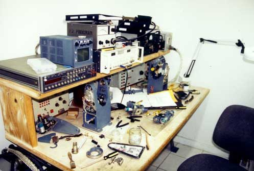
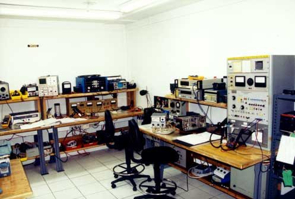
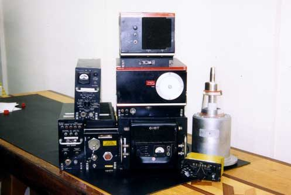
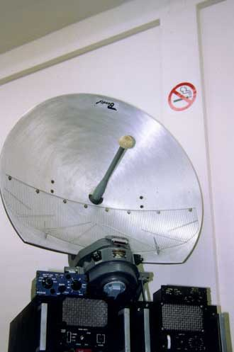
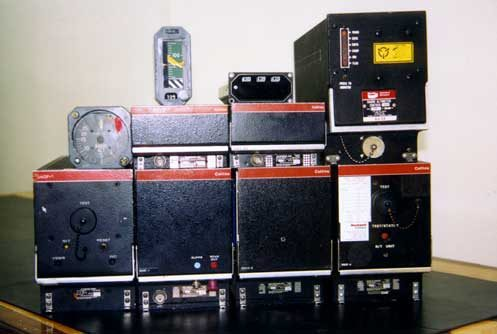
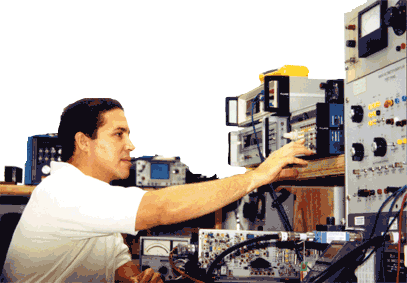

Shop Tour
Shop Tour
Select an image to enlarge it. Use the arrow keys to move between images.
Images

Aviation Workshop Entrance 
Aviation Workshop DME Transponder Bench 
Aviation Workshop Radar Bench 1 
Aviation Workshop NAV/COMM Bench 
Aviation Workshop Radar Bench 2 
Aviation Workshop DME & Altimeter Benches 
Aviation Workshop Altimeter Test Set 
Aviation Workshop HF Antenna 
Aviation Workshop Radar Indicators 
Aviation Workshop Large Radar System 
Aviation Workshop Radio Altimeters



Visit our offices
Confidence Aviation, Inc.7605 N.W. 50th Street
Miami, FL 33166
Phone: 1-305-392-6291